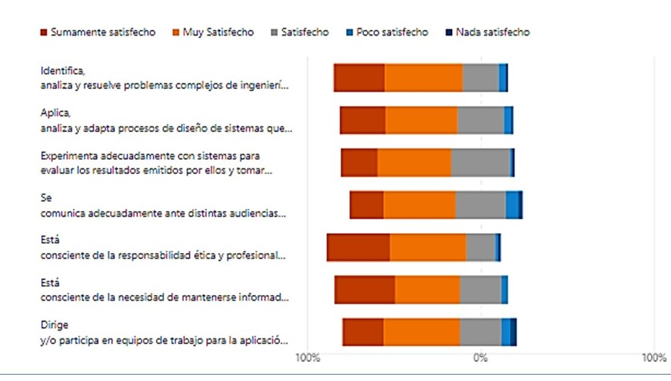
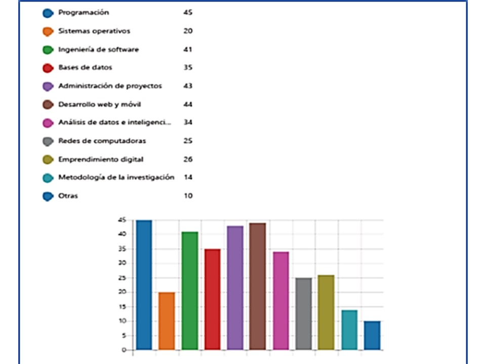

Centro de Innovación Tecnológica del
Estado de Quintana Roo
CENTRO DE INNOVACIÓN
Justificación
Con la finalidad de seguir aportando espacios adecuados para que los estudiantes del ITCh realicen sus proyectos de
residencias profesionales, innovación, servicio social, modelo dual, proyecto integrador, incluso proyecto en
vinculación con otras instituciones tanto públicas como privadas.
Adicionalmente se pretende tomar en cuenta las aportaciones que los egresados y empleadores de las carreras del
departamento de Sistemas y Computación han vertido en el estudio del entorno laboral realizado en el mes de febrero
de 2022, con lo que se ha podido constatar las competencias y habilidades que requieren nuestros estudiantes para
satisfacer las necesidades de desarrollo en su ámbito de campo laboral.
A partir del análisis de los datos del estudio se destacan:
El nivel de satisfacción y objetivos en ejercicio de profesión
El nivel de satisfacción de los egresados fue medido a partir de criterios en los cuáles se les pregunta si las
competencias genéricas de ingeniería, las específicas de su profesión y las de comunicación, le han ayudado al
logro de sus objetivos profesional. En la figura 3 se puede observar que la competencia de comunicación ante
distintas audiencias y trabajo en equipo son las que mostraron menor nivel de satisfacción.

Figura 3. Nivel de satisfacción de conocimientos y habilidades obtenidas en su formación académica.
Áreas de mejora y percepción personal
Por medio de tres preguntas se logró conocer los comentarios de los entrevistados, las posibles áreas de mejora y
opiniones de los egresados sobre el programa educativo que cursó en su formación profesional.
La encuesta recabo las opiniones sobre los tópicos relacionados con su formación y las oportunidades
de mejora del programa educativo. En la figura 4 se muestra que tópicos referentes a la programación, ingeniería de
software y administración de proyectos deben ser mejorados en la formación que brindamos a los alumnos.

Figura 4. Tópicos sugeridos por los egresados para mejorar la formación académica
Al igual se les solicitó a los egresados que señalaran que temas y situaciones por medio de las cuales
se puede mejorar el programa educativo. Las sugerencias más recurrentes son las siguientes:
Administración de proyectos: enfoque práctico con metodologías ágiles, comunicación.
Manejo de equipos de desarrollo de software.
Inteligencia artificial: enfoque práctico aplicando métodos de manipulación, análisis y visualización de
datos usando data sets de casos reales.
Cómputo en la nube: entendimiento de los servicios en la nube y su integración con otros campos como redes y programación.
Inglés técnico IT: reforzar el inglés con temas técnicos de área.
Algunos aspectos de competencias personales.
Prácticas de situaciones reales.
Nuevas tecnologías (Devops, Dockers, BlockCahin).
Mejor enfoque en cuanto al desarrollo web, permitir a los alumnos explorar e
interactuar con los nuevos frameworks y arquitecturas de desarrollo.
Desarrollo de habilidades blandas.
Este último bloque contiene la respuesta de empleadores sobre comentarios finales de
la encuesta. A continuación, se enlistan estos comentarios.
Promover el trabajo en equipo.
Fortalecer la lectura y comprensión en inglés.
Realización de prácticas reales.
Conocimientos en nuevas metodologías y tecnologías de desarrollo de software.
Mejorar sus capacidades de comunicación oral y escrita.
Mejorar sus conocimientos en gestión financiera y planeación.
Percepción y sugerencias de los empleadores
Con base en el análisis realizado a las respuestas de las encuestas de los empleadores se identifican elementos
suficientes para realizar mejoras en algunos planes de estudio considerando los siguientes tópicos:
Considerar en las sugerencias didácticas actividades para desarrollar habilidades de comunicación oral y escrita.
Considerar el inglés como parte de algunas asignaturas.
Considerar la necesidad hacer más prácticas algunos temas de asignaturas.
Fortalecer las habilidades de trabajo en equipo incluidas en las actividades de aprendizaje.
Mejorar en caso de ser necesario la redacción de las competencias por asignaturas.
Actualizar la bibliografía de las asignaturas.
Apoyar para que logren mejorar en sus pruebas de habilidades.